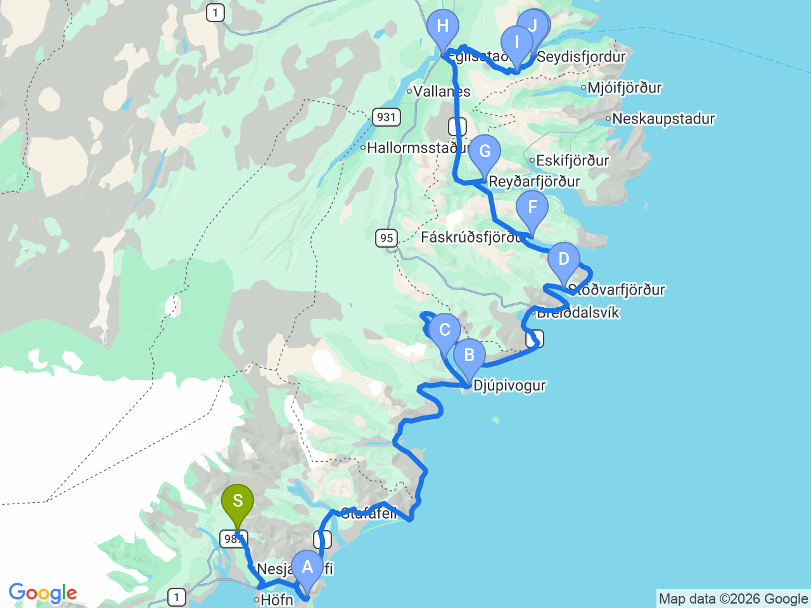

Day 10 · 2026-08-25（二）
冰島環島 Day 5/11
東部峽灣巡禮：蝙蝠山・小漁村・塞濟斯菲厄澤彩虹教堂
沿著東峽灣一路北上，途經多個寧靜小漁村，最後翻山抵達彩虹教堂小鎮

行程明細DAY 10
| 時間 | 地點 | 地點 (英文) | 價格 | 預計停留(分鐘) | 備註 |
|---|---|---|---|---|---|
| 08:30 | 飯店出發 | 沿 1 號公路持續往東北前進 | |||
| 09:00 | 西角山（蝙蝠山） | AVestrahorn Mountain | 1000（每人） | 90–120 | 赫本附近的經典黑沙灘與陡峭峭壁，倒影極美。需於 Viking Café 購票入場，旁有維京小鎮電影拍攝道具造景，此為每人入場費而非停車費 |
| 11:15 | 都皮沃古爾 | BDjúpivogur | 免費 | 45–60 | 東峽灣寧靜小鎮，以港口邊 34 個花崗岩巨型「神之蛋」（Eggin í Gleðivík）戶外雕塑與鳥類生態聞名 |
| 12:30 | 布蘭斯丁峰（錐形山） | CBulandstindur | 免費 | 15–30 | 緊鄰都皮沃古爾的金字塔型神山，傳說能實現願望。可在 1 號公路旁或鎮上遠眺拍照，極具震撼感 |
| 13:20 | 斯泰茲瓦菲厄澤小教堂 | DTiny Church (Stöðvarfjörður) | 免費 | 15–30 | 位於 Stöðvarfjörður 沿海小鎮（Fjarðarbraut 37a）的可愛小巧教堂，順路拍照打卡點 |
| 14:10 | 福斯克魯斯菲厄澤 | FFáskrúðsfjörður | 免費 | 30–45 | 充滿濃厚法國風情的小鎮，過去為法國漁民基地，路牌皆為冰/法雙語，鎮上有法式歷史博物館與舊醫院飯店 |
| 15:10 | 雷扎爾菲厄澤 | GReyðarfjörður | 免費 | 30 | 東峽灣最長峽灣之一，二戰期間曾為英美軍隊基地，鎮上有二戰歷史博物館，峽灣風光平靜壯麗 |
| 16:00 | 埃伊爾斯塔濟 | HEgilsstaðir | 免費 | 45–60 | 東冰島最大交通與商業樞紐，設有大型小豬超市（Bónus）與加油站，適合在此補給物資與加油 |
| 17:30 | 華特米蒂滑板觀景點 | IWalter Mitty Longboard Viewpoint | 免費 | 15–20 | 位於 93 號公路山口（Fjarðarheiði），為電影《白日夢冒險王》主角溜長板的經典取景地，俯瞰峽灣視野極佳 |
| 18:05 | 塞濟斯菲厄澤彩虹教堂 | JSeyðisfjarðarkirkja (Blue Church) | 免費 | 30–45 | 塞濟斯菲厄澤最標誌性的地標，淡藍色教堂前方鋪設繽紛的彩虹石板步道，為熱門打卡景點 |
| 18:50 | 塞濟斯菲厄澤旅遊資訊中心 | KSeydisfjordur Information Centre | 免費 | 15–20 | 位於鎮上渡輪碼頭附近，提供當地地圖與諮詢。確認設有乾淨的公共洗手間供遊客使用 |
| 19:40 | 抵達 Lake Hótel Egilsstaðir Check-in |
每日三餐
早餐
未安排
午餐
未安排
Djúpivogur 或 Egilsstaðir 附近解決，餐廳尚未確認
晚餐
未安排
Lake Hótel Egilsstaðir 附設餐廳（Eldhúsið）或市區解決，餐廳尚未確認
住宿資訊
Lake Hótel EgilsstaðirGistihúsið á Egilsstöðum
📍 Lake Hótel EgilsstaðirCheck-in15:00
位於拉加爾湖（Lagarfljót）畔的歷史高級飯店，附設優秀景觀餐廳（Eldhúsið）
本日預估開車里程
307km
Höfn → Vestrahorn 10km → Djúpivogur 90km → Stöðvarfjörður 72km → Fáskrúðsfjörður 19km → Reyðarfjörður 28km → Egilsstaðir 34km → Seyðisfjörður來回 54km（部分東峽灣路段為概估，實際請以導航為準）
該區域加油站
- N1 Djúpivogur東峽灣路線中段補給（自助式，冬季營運可能不穩定）
- N1 Egilsstaðir東部最大城鎮，補給與加油首選